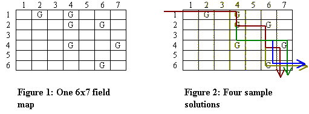

Problem K |
Robots(II) |
|
Time Limit |
1 Second |
Your company provides robots that can be used to pick up litter from fields after sporting events and concerts. Before robots are assigned to a job, an aerial photograph of the field is marked with a grid. Each location in the grid that contains garbage is marked. All robots begin in the Northwest corner and end their movement in the Southeast corner. A robot can only move in two directions, either to the East or South. Upon entering a cell that contains garbage, the robot can be programmed to pick it up before proceeding. Once a robot reaches its destination at the Southeast corner it cannot be repositioned or reused. Since your expenses are directly proportional to the number of robots used for a particular job, you are interested in making the most out of them. Your task would be to use a robot to clean the maximum number of cells containing garbage. Now there can be many ways to do this job, so your task would be to report that number of ways and show us one such sample.
You see your robot can traverse many cells without picking up garbage, so for us a valid solution would be the sequence of cell numbers that the robot cleans. The robots only clean cells that contain garbage; but you can program them to avoid picking up garbage from specific cells, if you would want to.

In the figure above we show a field map that has 6 rows and 7 columns. The cells in a field map are numbered in row major order starting from 1. For the example shown here, the following 7 cells contain garbage: 2 (1,2), 4 (1,4), 11 (2, 4), 13 (2, 6), 25 (4, 4), 28 (4, 7) and 41 (6, 7). Here cells are presented in cell_number (row, column) format. Now the maximum number of cells that can be cleaned is 5, and there are 4 different ways to do that:
<2, 4, 11, 13, 28>
<2, 4, 11, 13, 41>
<2, 4, 11, 25, 28>
<2, 4, 11, 25, 41>
Input
An input file consists of one
or more field maps followed by a line containing -1 -1 to signal
the end of the input data. The description of a field map starts with the
number of rows and the number of columns in the grid. Then in the subsequent
lines, the garbage locations follows. The end of a field map is signaled by 0
0. Each garbage location consists of two integers, the row and column,
separated by a single space. The rows and columns are numbered as shown in
Figure 1. The garbage locations will not be given in any specific order.
And a location would not be reported twice for a field map. Please note that for all the test cases you
are required to solve, the field map would be of at most 100 rows and 100
columns.
The output for each test case starts with the serial number (starting from 1) for that test case. Then the following integers are listed on a line: N – the maximum number of cells that the robot can clean, C – the number of ways that these N cells can be cleaned, and N numbers describing one possible sequence of cell numbers that the robot will clean. As there can be C different such sequences and we are asking for only one sequence any valid sequence would do. Make sure that all these 2+N integers for a test case are printed on a single line. There must be one space separating two consecutive integers and a space between the colon and the first integer on the line. See the sample output format for a clear idea.
|
Sample Input |
Output for Sample Input |
|
6
7 1
2 1
4 2
4 2
6 4
4 4
7 6
6 0
0 4
4 1
1 2
2 3
3 4
4 0
0 -1
-1 |
CASE#1:
5 4 2 4 11 13 28 CASE#2:
4 1 1 6 11 16 |
Problemsetter: Monirul
Hasan (The background story and images are from the "ACM Mid-Central Regional Programming Contest, 2003")
Member of Elite
Problemsetters' Panel